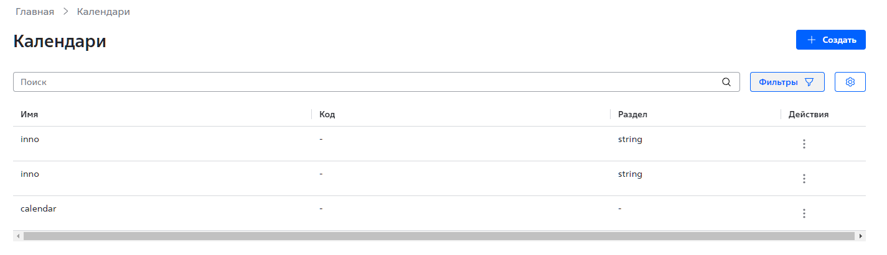

Начало работы Веб-интерфейс приложения «АРМ для Системного календаря» доступен из веб-интерфейса приложения «АРМ сотрудника банка» (АРМ ДБО). Аутентификация Для начала работы и получения доступа к функциональности пройдите аутентификацию в приложении АРМ ДБО, используя вашу учетную запись с полномочиями администратора. См. подробное описание процедуры аутентификации в документации на АРМ ДБО. Главная страница После успешного прохождения процедуры аутентификации откроется главная страница АРМ ДБО. Для перехода в интерфейс приложения «АРМ для Системного календаря»: Нажмите на боковой панели Разное. Появится выпадающее меню. Выберите Календари. Откроется главная страница раздела Календари (Рис. 1).  Рис. 1. Главная страница раздела Календари. ← Права доступа Основные сценарии использования →